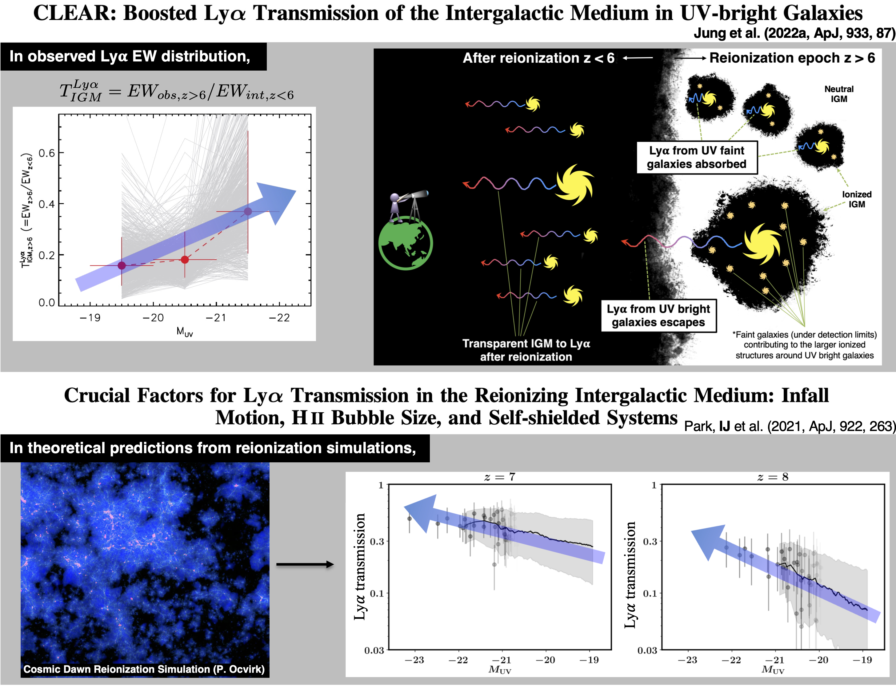
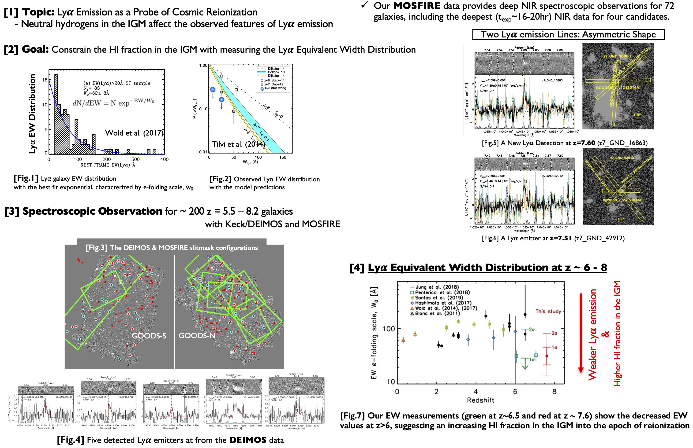
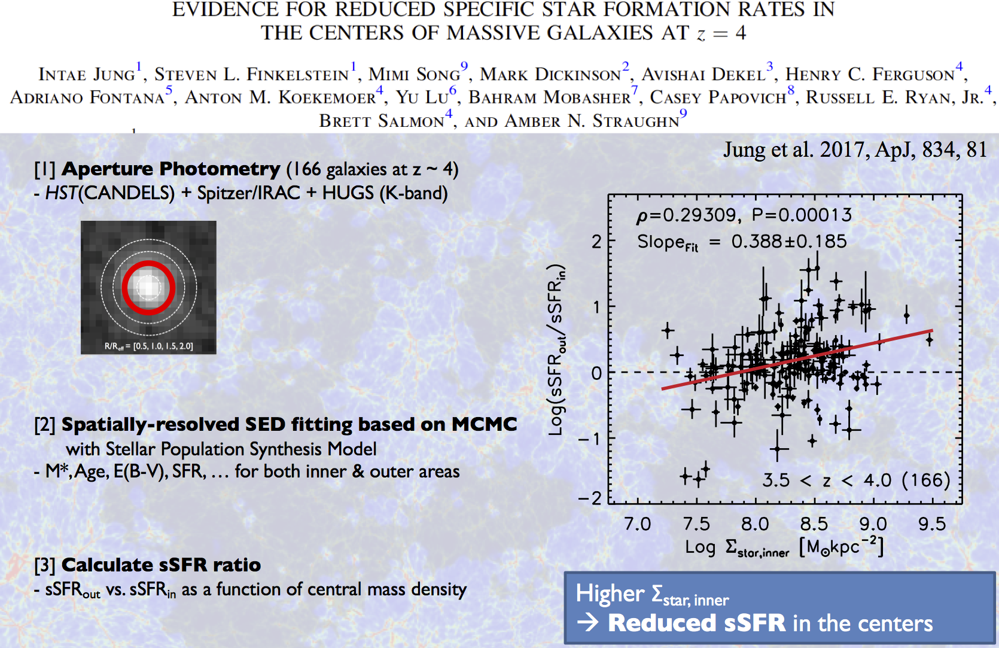

• Earlier Reionization in Regions around UV-luminous Galaxies
Using the combined spectroscopic dataset of HST grism and Keck DEIMOS+MOSFIRE observations of 275 reionization-era galaxies, we constrained Lyman-alpha equivalent-width (EW) distribution at z > 6 as a function of UV luminosity. We provided the empirical measurements of the IGM transmission, defined as the relative ratio of observed-to-expected (or intrinsic) EWs of Lyman-alpha. We found that the IGM transmission appears to be higher for the UV-luminous galaxies, suggesting that reionization proceeds faster in regions around such galaxies (Jung et al. 2022a, ApJ, 933, 87). This observational finding is consistent with theoretical predictions on Lyman-alpha transmission in the IGM from reionization simulations (Park, IJ et al. 2021, ApJ, 922, 263). The theoretical study shows that UV-luminous galaxies tend to reside in “ionized bubbles” as they ionize large volumes and are located in overdense regions, making it easier for Lyman-alpha photons to escape.
• Texas Spectroscopic Search for Lyman-alpha Emission at the End of Reionization
My doctoral thesis at the University of Texas at Austin, entitled “Constraining the End of Reionization with Lyman-alpha Spectroscopy,” was a pioneering study that utilized Lyman-alpha emission to map the ionization state of the IGM during reionization. I performed statistical analyses on their Lyman-alpha emission properties by analyzing spectroscopic observations of distant galaxies. This work led to a series of publications in the Astrophysical Journal, developing a method to estimate the neutral hydrogen fraction in the IGM, discovering new Lyman-alpha emitters (LAEs) at the highest redshifts, and advancing our understanding of the timeline and topology of reionization (Jung et al. 2018, ApJ, 864, 103; Jung et al. 2019, ApJ, 877, 146; Jung et al.. 2020, ApJ, 904, 144).
• A Spatially-Resolved Stellar Population Study Using the HST Imaging: Reduced star-formation rates in the centers of massive galaxies at z = 4
In the PhD program at the University of Texas at Austin, I have dealt with the Hubble Space Telescope imaging data for studying spatially-resolved star formation histories of distant galaxies, which was published, Evidence for Reduced Specific Star Formation Rates in the Centers of Massive Galaxies at z = 4 (Jung et al. 2017, ApJ, 834, 81). In this work, I developed my own galaxy spectral energy distribution fitting IDL procedure based on a Markov Chain Monte Carlo (MCMC) algorithm, and performed a spatially-resolved stellar population study of z = 4 galaxies. A key discovery of the study is that the galaxies with the highest central mass densities have reduced star formation in their centers, possibly observing the earliest phases of bulge formation.
• Building Dark Matter Halo Merger Trees (ySAMtm)
(Left) schematic diagram showing the processes of a dark matter halo merger (Jung et al. 2014, ApJ, 794, 74).
During my master's program, I studied the theoretical understanding of galaxy evolution using N-body simulations and a semi-analytic model with Prof. Sukyoung K. Yi at Yonsei University in Seoul, South Korea. Particularly, I developed a dark matter (DM) halo merger tree builder, called ySAMtm, which constructs DM halo merger trees from cosmological N-body simulations and provides a DM halo backbone for the semi-analytic model of Prof. Yi's group (ySAM; Lee & Yi, 2013). Jung et al. (2014) also study large-scale environmental effects on galaxy assembly by analyzing the semi-analytic model galaxies.